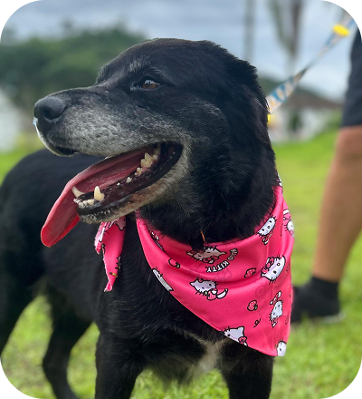

ADOÇÃO CONJUNTA!!
CLÉO
Cão | Fêmea | 7 anos | castrado(a) | vacinado(a)
DESCRIÇÃO: Glória (mãe) e Cléo (filha), foram encontradas abandonadas na BR. São muito dóceis, amáveis e ativas, apesar da idade mais adulta, não apresentam problemas de saúde e são muito brincalhonas. Precisam de um lar com muito amor, carinho e espaço, pois são duas cachorras grandes.
